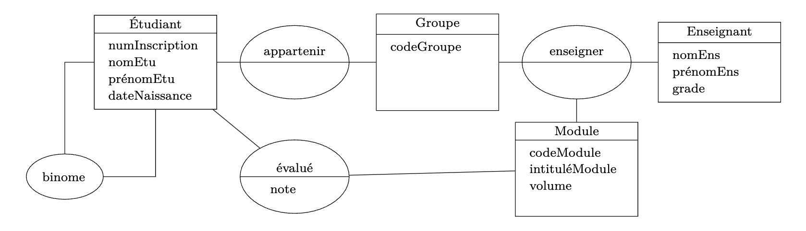
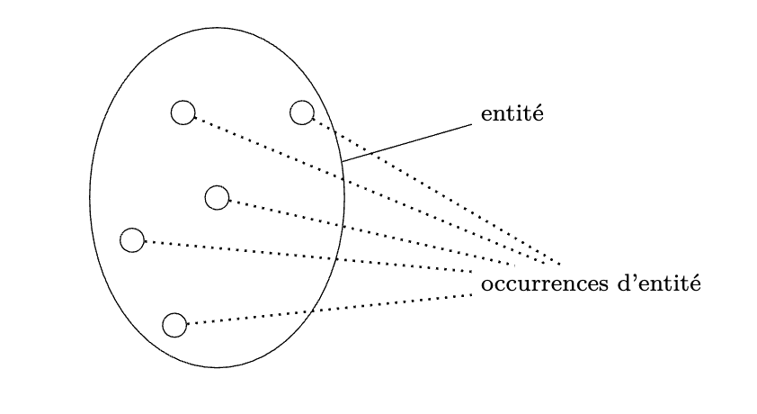
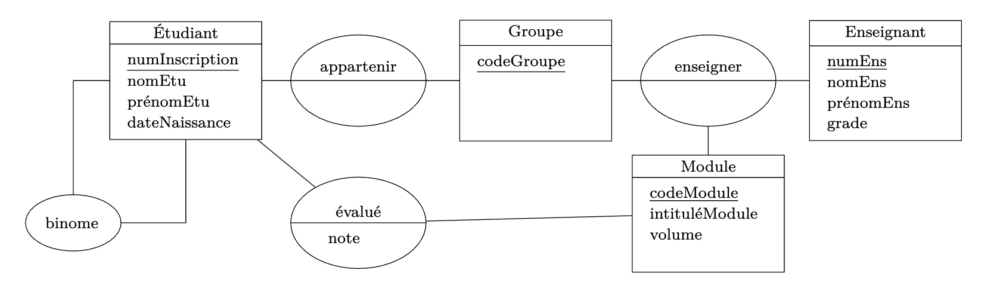

Une base de données efficace est une base de données bien conçue. Il est alors nécessaire
de précéder l’étape d’implémentation de la base de données par une étape de modélisation des
données.
L’étape de modélisation est ainsi l’une des étapes les plus importantes dans son cycle de
vie. C’est elle qui va définir de la structure de la BDD, et c’est sur elle que reposera l’efficacité
ou non de la BDD. Cette étape consiste à analyser les besoins des utilisateurs de la BDD et la
nature des données à manipuler ainsi que leurs relations.
Deux modèles peuvent être produits et seront présentés dans ce chapitre : le modèle conceptuel de données (MCD) et le modèle logique de données (MLD).
Une BDD bien conçue est une BDD basée sur un modèle conceptuel qui respectera un certain nombre de règles dîtes de "normalisation". Parmi les principes les plus importants, on retrouve
le principe de non-redondance et qui est le principe d’évitement de duplications (répétitions) inutiles des données dans la BDD. L’objectif principal étant d’éliminer les incohérences lors de
modifications de données, car en cas de redondance, la modification d’une donnée signifie que toutes ses copies devraient être mises à jour.
Le modèle conceptuel de données (MCD) est un modèle graphique qui a pour but de décrire les données qui seront utilisées dans la future BDD. Le MCD décrit la sémantique c’est-à-dire le sens attaché à ces données et à leurs rapports et non à l’utilisation qui peut en être faite. Cette section présente les différentes notions liées à un MCD.
Définition : Une entité est une classe d’objets homogènes ayant une existence propre par rapport au réel modélisé.
Exemple : Exemples d’entité manipulées par le réel de la scolarité de l’école : l’entité "Étudiant", l’entité "Groupe", l’entité "Enseignent", etc.
Représentation graphique : Dans un MCD, une entité est représentée par un rectangle ayant deux cases. La case supérieure contient le nom de l’entité.

Définition : Une association est une liaison qui va lier un certain nombre d’entités dans le réel modélisé.
Exemple : Dans le réel de la scolarité, il y a par exemple une association entre l’entité "Étudiant" et l’entité "Groupe", car il est important de savoir l’appartenance d’un étudiant à son groupe. Il pourrait y avoir une association entre l’entité "Étudiant" et l’entité "Enseignant", sauf qu’il serait plus intéressant qu’il y ait association entre l’entité "Groupe" et l’entité "En- seignant". La liaison entre un "Enseignant" et un "Étudiant" serait alors représentée mais de manière indirecte (Enseignant ↔ Groupe ↔ Étudiant).
Représentation graphique : Dans un MCD, une association est représentée par une forme ovale ayant deux cases (ou une seule, voir la section "Propriété"). La case supérieure contient le nom de l’association. Le nom de l’association est souvent un verbe ou bien la concaténation des noms des entités liées par l’association. Chaque lien qui relie une association à une entité est appelée branche.

Remarques :
Exemples Les deux associations "appartenir" et "enseigner" de l’exemple précédent sont des
associations binaires, étant donné que chacune d’elles lie exactement deux entités.
Si on considère que chaque étudiant pourrait faire partie d’un même binôme avec un autre
étudiant tout au long de l’année, alors cette information pourrait être représentée par une
association réflexive "binôme" qui va lier l’entité "Étudiant" à elle-même.
Si on voulait maintenant préciser, dans notre MCD, le module enseigné par un certain
enseignant à un certain groupe, alors l’association binaire "Enseigner" se transformerait en
association ternaire qui lierait les 3 entités "Enseignant", "Groupe" et "Module".
Définition : Une propriété est une information simple sur une entité ou une association.
Exemple :
Pour un étudiant, il serait intéressant d’avoir comme propriétés : son numéro d’inscription, son nom,
son/ses prénom(s), et sa date de naissance.
Pour un groupe : son code.
Pour un enseignant : son nom, son/ses prénom(s) et son grade. Pour un module : son code, son
intitulé et son volume horaire.
Si on voulait représenter la note d’un étudiant pour chaque module, alors cela pourrait être modélisé par une association "évalué" entre l’entité "Étudiant" et l’entité "Module", la note serait alors une propriété de cette association.
En effet, la note ne pourrait pas être une propriété de l’entité "Étudiant", car chaque étudiant possède plusieurs notes, et la note ne pourrait pas non plus être une propriété de l’entité "Module" car cela pourrait signifier que tous les étudiants auraient la même note pour un certain module.
Représentation graphique : Les propriétés sont listées dans la case inférieure de l’entité ou de l’association concernée.
Exemple :
Remarques :
Une occurrence est un exemple concret d’une entité ou d’une association.
Étant donné qu’une entité est une classe/famille d’objets homogènes, chaque membre de cette famille est alors une occurrence de l’entité considérée. Pour chaque occurrence d’une entité, chaque propriété prend une valeur.
Pour résumé :
Résumé en image mentale :
👉 Entité = une catégorie (ex. Étudiant, Groupe)
👉 Occurrence d’entité = un élément précis de cette catégorie (ex. Ali Bouali, Groupe S4)
👉 Association = un lien entre deux ou plusieurs entités (ex. Appartenir)
👉 Occurrence d’association = un cas précis de ce lien (ex. Ali Bouali appartient au Groupe S4)
Définition : Un identifiant est un ensemble de propriétés (une ou plusieurs) qui permet d’identifier une occurrence d’entité ou d’association de manière unique.
Cela signifie qu’il n’existe pas deux occurrences de la même entité ou de la même association avec la même valeur d’identifiant. Toute entité ou association possède un identifiant.
Représentation graphique
Exemple :
La propriété "numInscription" identifie de manière unique une occurrence de l’entité "Étudiant" : il n’existe pas deux étudiants avec la même valeur pour cette propriété. C’est donc un identifiant pour l’entité "Étudiant".
De la même manière, "codeGroupe" est un identifiant pour l’entité "Groupe" et "codeModule" est un identifiant pour l’entité "Module".
Par contre, aucune des propriétés déjà présentes dans l’entité "Enseignant" n’identifie une occurrence de l’entité de manière unique, il est alors nécessaire d’ajouter une nouvelle propriété qui jouera le rôle d’identifiant, par exemple : "numEns" qui sera un numéro unique pour chaque enseignant de l’école.
En ce qui concerne les associations, leur identifiant est implicite : on ne le représente pas graphiquement. Pour l’association "appartenir" par exemple, l’identifiant est formé automatiquement des deux propriétés "numInscription" et "codeGroupe".
Exemple :
— Si on reprend l’exemple d’occurrence d’association précédent, celui-ci est décrit à travers la valeur de l’identifiant de l’étudiant et la valeur du code du groupe (numInscription=23467, codeGroupe="S4").
— Une occurrence de l’association "évalué" sera décrite par trois valeurs, étant donné que cette association possède une propriété, ex. (numInscription=23467, codeModule="INF4", note=15).
La cardinalité sert à définir combien de fois une occurrence d’une entité peut être liée à une occurrence d’une association.
Elle est représentée par deux nombres (min, max) qui indiquent :
Le minimum (min) : Combien de fois une occurrence doit obligatoirement être liée à une association ?
Le maximum (max) : Combien de fois une occurrence peut être liée au maximum à une association ?
Remarque :
Par convention la valeur min sera mise à 0 ou bien à 1, et la valeur max sera
mise à 1 ou bien à n, de la manière suivante :
— Lorsque la réponse à la question pour identifier la cardinalité minimale :
= 0 alors min ←0
> 0 alors min ←1
— Lorsque la réponse à la question pour identifier la cardinalité maximale :
= 1 alors max ←1
> 1 alors max ←n
Représentation graphique : Les cardinalités sont placées au niveau des branches des associations du coté des
entités concernées.
Reprenons le MCD précédant :
Remarque :
En ce qui concerne l’association réflexive "binome", les deux occurrences de l’entité "Étudiant"
qui seront liées par une occurrence de l’association auront le même rôle, les
cardinalités des deux côtés seront donc identiques. Notons que cela n’est toutefois pas applicable à
toutes les associations réflexives.
Association de type fils-fils
Une association est de type fils-fils si la valeur max des cardinalités des deux entités liées est égale à 1. Dans ce cas, chaque occurrence de chacune des deux entités pourra être liée à une seule occurrence de l’autre entité au plus.
Association de type père-fils
Une association est de type père-fils si la valeur max de la cardinalité d’une des entités liées est égale à 1 alors que l’autre est égale à n. La première entité sera dite fils alors que la deuxième sera dite père, par rapport à cette association. Ainsi, une occurrence de l’entité fils ne pourra être liée qu’à une seule occurrence de l’entité père, alors qu’une occurrence de l’entité père pourra être liée à plusieurs occurrences de l’entité fils.
Association de type père-père
Une association est de type père-père si la valeur max des cardinalités des deux entités liées est égale à n. Dans ce cas, chaque occurrence de chacune des deux entités pourra être liée à plusieurs occurrences de l’autre entité.
Exemples Dans notre MCD :